키프레임 채취 — 세 팀 취합
2026-09-08 · 공장1 취합 · 세 판 모두 2048×1152 · 243프레임 · 10.125초 · 추가 집행 $0
고른 방법 — 세 팀이 같은 기준을 썼습니다
cinematography.md §5-1 이 구도 30종을 뽑을 때 쓴 기준 그대로,
서로 2축 이상 떨어지게 골랐습니다. 축은 넷입니다 —
①카메라 높이 ②샷 크기·거리 ③자세 ④몸 방향. 하나만 다르면 «겹친 것»으로 봅니다.
수를 미리 정하지 않았습니다. 2축 이상 갈리는 장이 몇이냐가 수를 정합니다 —
그래서 팀마다 3·5·6장으로 다릅니다.
T15 한화공장2 · 후보 95 → 93 → 채택 5
🟢 93장 전부 눈을 떴습니다(사람 눈으로 전수 확인). 거른 것은 하드컷 프레임 둘뿐입니다.
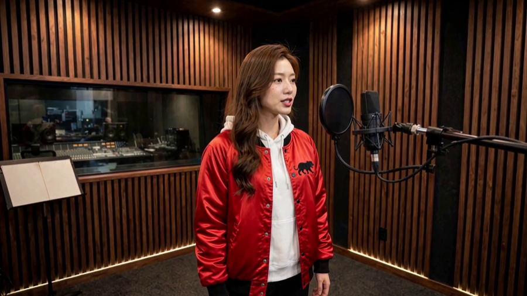
11.75초
눈높이 · 미디엄 · 두 팔 내림 · 측면
기준 장
🟢 이물 0 · 화각이 참조와 제일 가깝다
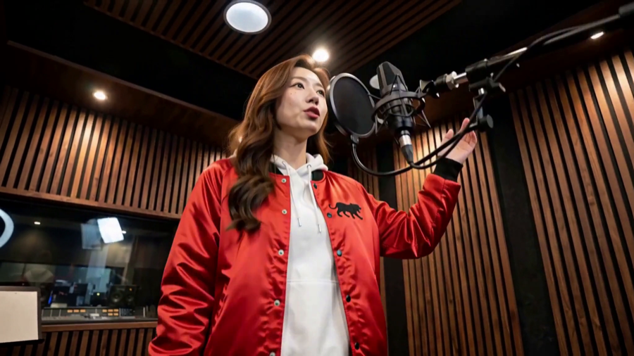
24.25초
로우 · 버스트 · 한 팔 올려 마이크 옆 · 3/4
1번과 4축 전부 다름
🟢 이물 0
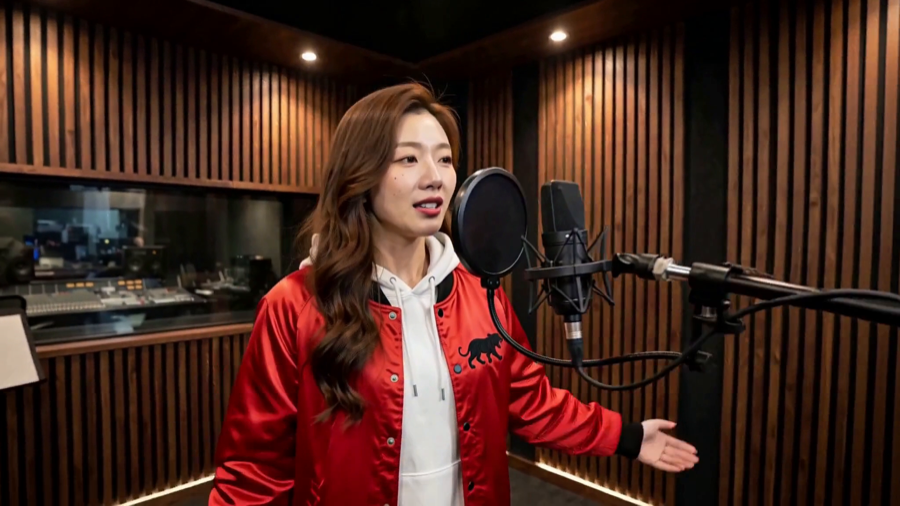
35.58초
눈높이 · 미디엄 · 두 팔 벌림 · 3/4
이웃 둘과 각각 «딱 2축»
🟡 다섯 중 제일 약합니다 — 문턱에 걸쳐 있습니다
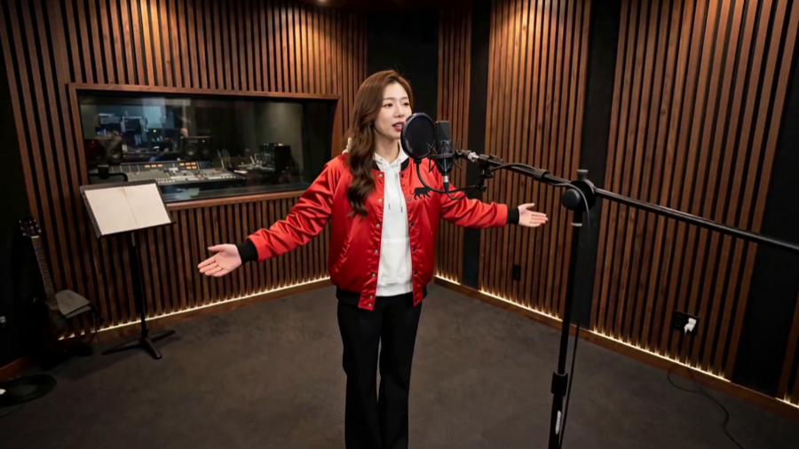
46.71초
하이 · 와이드 전신 · 두 팔 활짝 · 3/4
3번과 ①높이 ②크기 — 2축
🔴 왼쪽 끝에 기타가 듭니다(방 목록 밖)
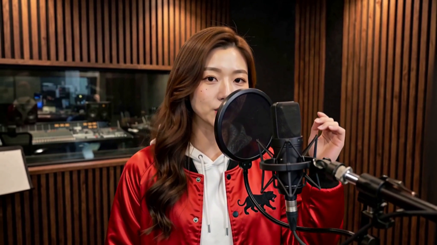
59.29초
눈높이 · 타이트 클로즈업 · 한 손 마이크 옆 · 정면
4번과 4축 전부 다름
🔴 렌즈를 봅니다 — 컷 참조로 쓰면 시선이 어긋납니다
T18 삼성공장3 · 후보 47 → 35 → 채택 6
셋업 넷 중 S3(와이드)는 통째로 반려했습니다 — 마이크가 얼굴을 가렸습니다.
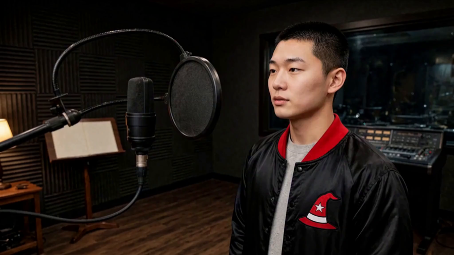
10.00초
눈높이 · 바스트 · 팔 프레임 밖 · 3/4(측면에 가깝다)
기준 장
🟢 참조와 화각이 제일 가까워 방이 제일 깨끗하다
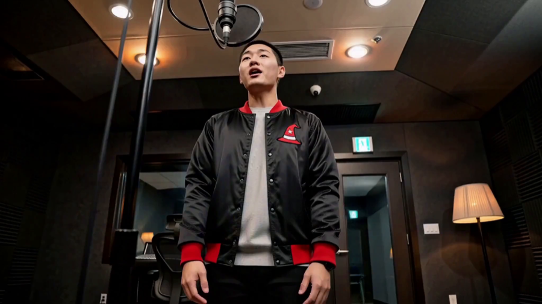
23.00초
로우 · 미디엄 · 두 팔 양옆 내림 · 정면
1번과 ①②④ — 3축
🟢 여섯 중 제일 선명한 장
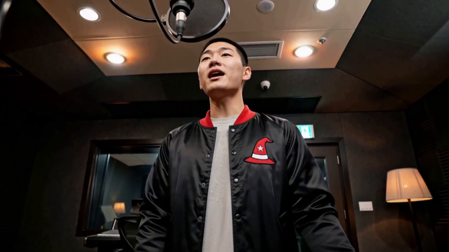
33.88초
로우 · 바스트 · 팔 프레임 밖 · 정면
2번과 ②③ — 2축
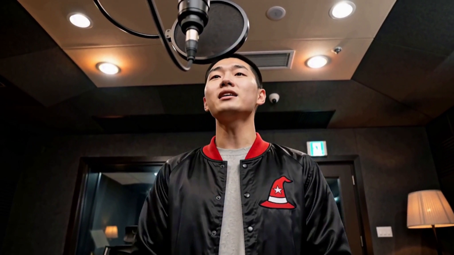
45.54초
로우 · 흉상 · 고개를 뒤로 들어올림 · 정면
3번과 ②③ — 2축
🟡 여섯 중 크기 간격이 제일 좁습니다
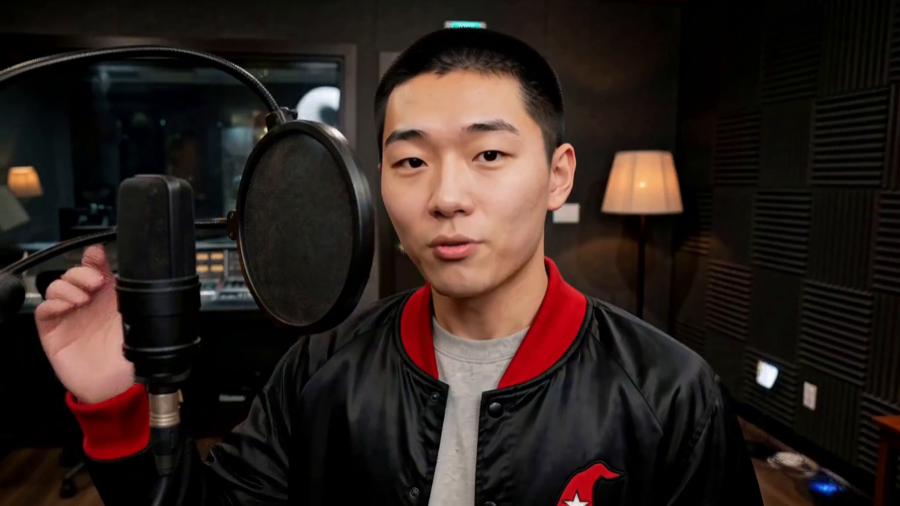
57.88초
눈높이 · 클로즈업 · 손이 아직 안 올라옴 · 정면
4번과 ①③ — 2축
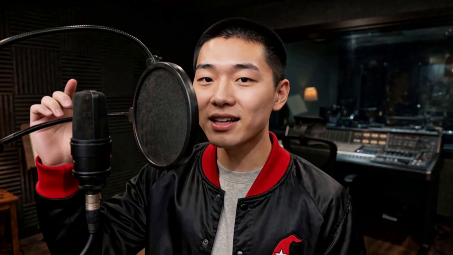
68.58초
눈높이 · 클로즈업 · 손이 마이크 옆 · 3/4
5번과 ③④ — 2축
⏳ 대기 12장(지우지 않았습니다) — 팔 활짝 벌린 «제일 좋은 자세»인데
마이크·팝필터가 얼굴을 통째로 덮었습니다. 물리 반려지만 자세가 아까워 되살리실 수 있게 남겼습니다.
T11 한화(먼저 뽑은 판)공장1 · 후보 243 전수 → 채택 3
🔴 이 판은 「이동-정지」가 나오기 전에 뽑은 것이라 10초 내내 카메라가 흐릅니다.
셋업이 하나뿐이라 각도가 연속으로 변하고, 눈 감은 구간이 흩어져 있습니다.
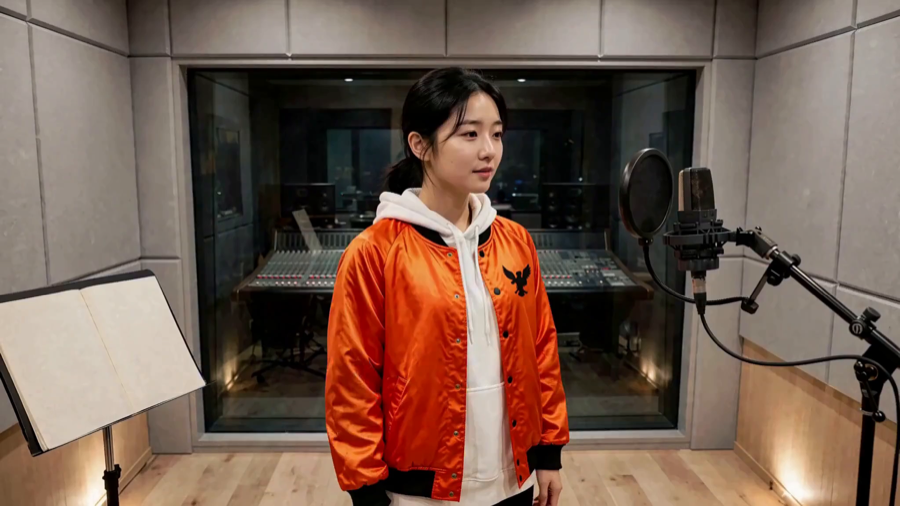
10.00초
눈높이 · 미디엄 · 팔 내림 · 3/4(측면)
기준 장
🟢 입을 다물고 있습니다 — 참조 규격(PERFORM §7)에 맞는 유일한 장
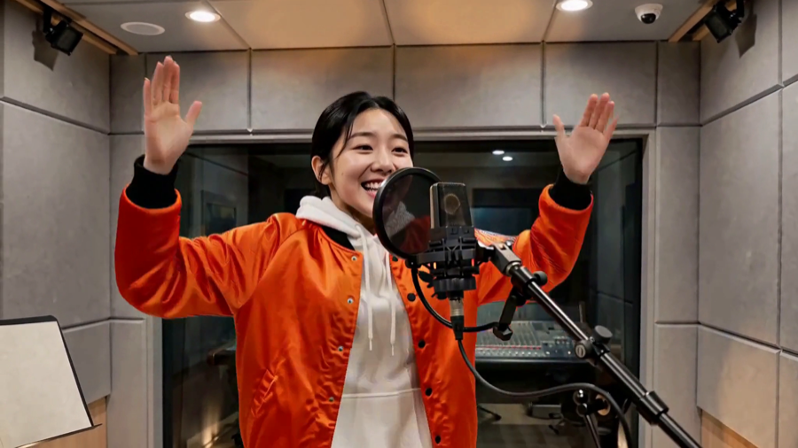
24.83초
눈높이 · 바스트 · 두 손 올림 · 3/4
1번과 ②③ — 2축
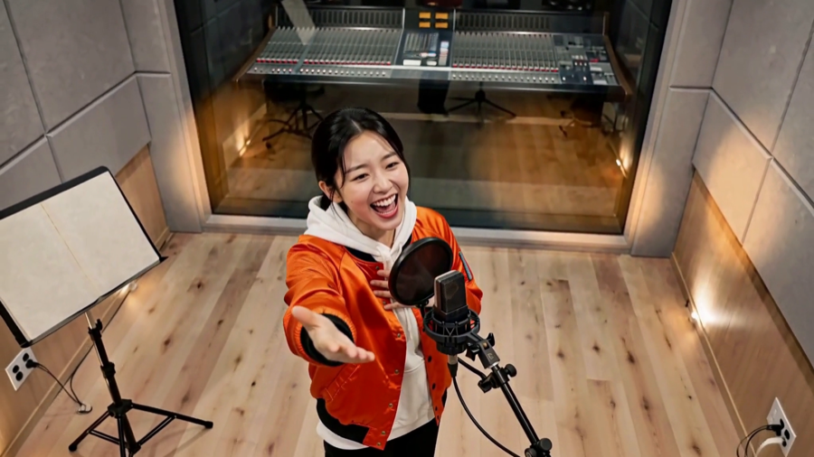
39.42초
하이(바닥이 뒤로) · 미디엄 · 손 앞으로 뻗음 · 3/4
2번과 ①③ — 2축
세 판이 서로 달랐습니다 같은 문장으로 발주했는데
여기서 알게 된 것 셋
- 모델이 「빨리 옮기고 멈춘다」를 «컷»으로 읽습니다. 카메라 무빙이 아니라 장면을 갈아 칩니다.
그래서 셋업이 서로 확실히 다릅니다 — 채취 목적에는 오히려 깨끗합니다.
- 「눈을 뜨고 노래한다」는 완전히 먹었습니다. T11 은 눈 감음 때문에 4장까지 떨어졌는데,
T15 는 93장 전부 눈을 떴습니다. 이번 판의 제일 큰 소득입니다.
- 멈춤이 산 것은 «선명함»이 아니라 «셋업이 갈리는 것»입니다.
정지 프레임이 2%→29·31%로 15배 늘었지만, 채택은 이동 구간에서도 나왔습니다.
다음 판에서 고칠 것 — 이미 규격에 반영했습니다
- 「눈을 뜨고, 입은 다문다」 — 정본 둘이 부딪히고 있었습니다. §1-y 는 「눈 뜨고 노래한다」를
요구하는데 PERFORM §7 은 「참조의 입은 다문다」를 요구합니다. T15 93장 중 입 다문 장이 사실상 하나뿐이었습니다.
- 와이드는 참조 화각을 넘지 않는다 — 화각이 넓어진 자리에서만 방 목록 밖 물건이 나왔습니다.
같은 판 안에서 화각 순으로 이물이 단조 증가하는 것까지 확인됐습니다.
- 마이크가 얼굴 앞을 지나지 않는다 — 좌우 축만 묶었더니 «높이»가 바뀔 때 얼굴을 가로질렀습니다.
대표님께 여쭐 것
- 각 팀에서 쓸 번호를 골라 주십시오. 팀별로 번호만 주시면 됩니다.
- T15 4번(기타가 든다)·5번(렌즈를 본다)을 그대로 쓸까요, 다음 판에서 다시 뽑을까요?
- T11 을 다시 뽑을까요? 셋뿐이고 「이동-정지」 판도 아닙니다.
345프레임(14.375초)으로 뽑으면 각도가 더 벌어집니다 — 약 $0.29.